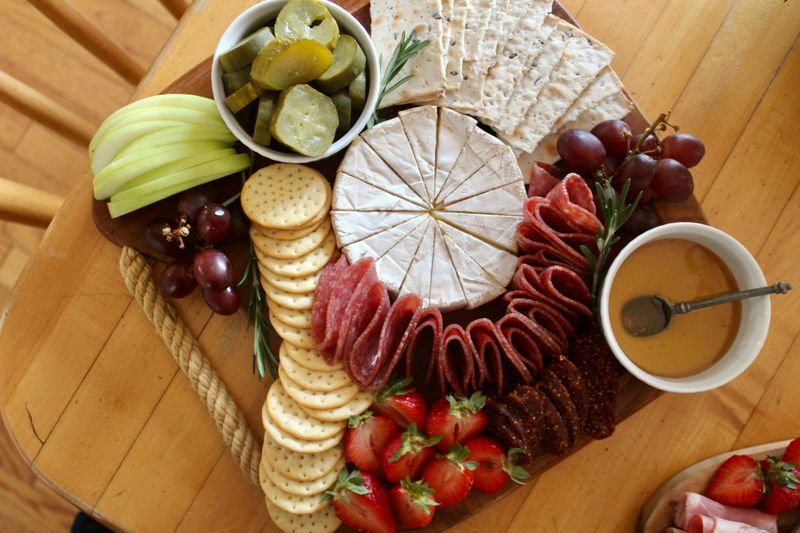
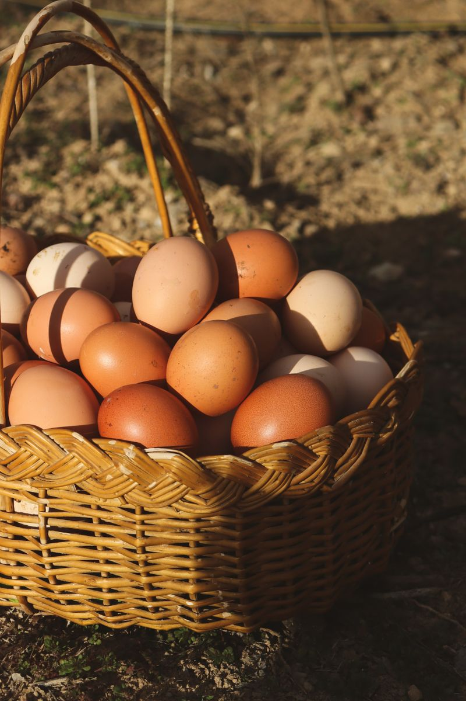
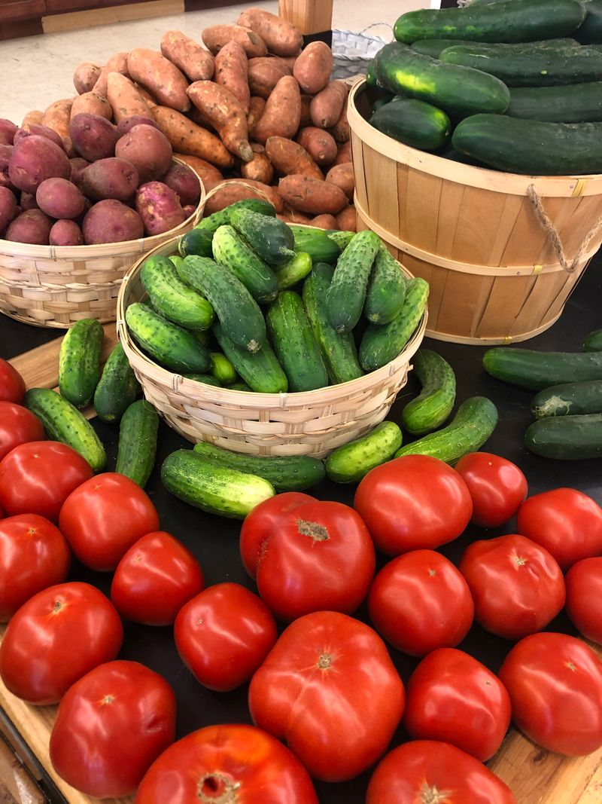
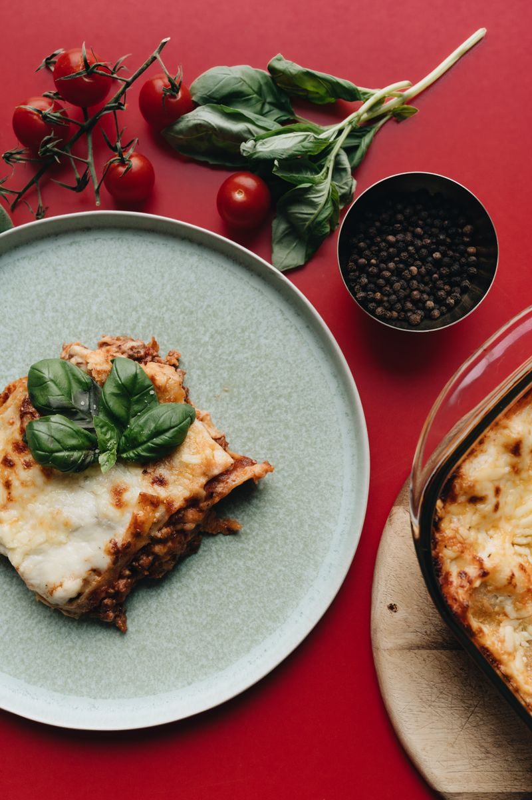
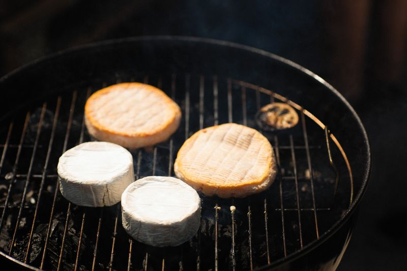
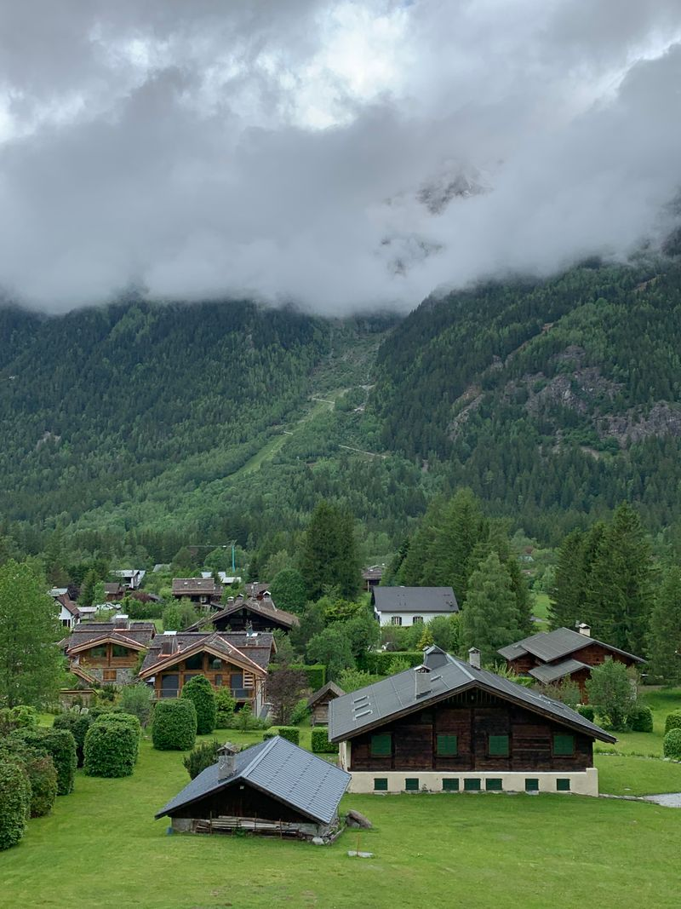

Distributeurs automatiques de produits frais et locaux en Savoie.
Nos propres Comptoirs : des casiers réfrigérés remplis de bons produits d'ici, accessibles 24h/24 – 7j/7, au plus près de chez vous.
En bref
- COMPTOIR 247 exploite ses propres distributeurs automatiques de produits frais et locaux, en Savoie et alentours.
- Accessibles 24h/24 – 7j/7, y compris le soir, le week-end et les jours fériés.
- Produits sélectionnés pour leur qualité et leur origine locale : fromages, charcuterie, œufs, fruits et légumes, plats d'artisans.
- Tout est géré par nos soins : sélection, approvisionnement, suivi des casiers et entretien des équipements.
- Communes, entreprises, sites touristiques : vous pouvez accueillir un Comptoir.
Ce que vous trouvez dans nos Comptoirs.
Du frais, du local. Pas de snacking industriel.
Fromages & produits laitiers
Reblochon, tomme, beaufort, yaourts et lait de la ferme, selon les saisons et les producteurs.

Charcuterie & viandes
Diots, saucissons, jambons et colis de viande d'éleveurs et de bouchers locaux.

Œufs & produits de la ferme
Œufs de poules élevées en plein air et produits fermiers du moment.

Fruits & légumes de saison
Cueillis au bon moment par des maraîchers et arboriculteurs du coin.

Plats d'artisans
Plats cuisinés et spécialités préparés par des traiteurs et restaurateurs locaux.

Spécialités savoyardes
Tout pour une raclette, une tartiflette ou une fondue improvisée, même à 22 h.
Nos propres Comptoirs.
Nous exploitons des distributeurs de produits frais.Nous sélectionnons
des produits de qualité et locaux, auprès de producteurs et d'artisans que nous connaissons.
Nous gérons entièrement
les équipements : installation, réglages, entretien et dépannage.
Nous approvisionnons
et assurons le suivi des casiers : rotation, chaîne du froid, réassort.
Vous achetez 24h/24 – 7j/7
au moment qui vous arrange, sans contrainte d'horaires.
Le bon produit, au bon endroit, au bon moment.
Acheter dans un Comptoir.
Repérez votre casier
Les produits sont visibles derrière les portes vitrées des casiers réfrigérés.
Payez sur la borne
Sélectionnez le numéro du casier et réglez directement sur le distributeur.
Servez-vous
La porte se déverrouille : votre produit vous attend, bien au frais.
Où trouver nos Comptoirs?
Savoie et alentoursSavoie et alentours
Nos distributeurs sont installés au cœur des villages, des stations et des lieux de passage.
Les ouvertures sur Instagram
Chaque nouvel emplacement est annoncé sur @comptoir247.
Un Comptoir chez vous ?
Vous avez un emplacement idéal ? Proposez-le nous.

EmplacementAccueillir un Comptoir sur votre site.
Commune, station, camping, entreprise, parking ou zone d'activité : offrez un service de proximité utile à vos habitants, salariés ou vacanciers.
- Un commerce de produits frais ouvert en permanence
- Nous installons, approvisionnons et entretenons le distributeur
- Un soutien concret aux producteurs du territoire
Producteur local ? Entrez dans nos Comptoirs.
Nous cherchons en permanence des producteurs et artisans qui partagent notre exigence de fraîcheur et de qualité.
Vos questions sur nos distributeurs.
Les produits sont-ils vraiment frais ?
Oui. Nos distributeurs sont des casiers réfrigérés : les produits y sont conservés au froid jusqu'à l'achat. Nous approvisionnons et suivons chaque casier nous-mêmes pour garantir la fraîcheur et la rotation des produits.
D'où viennent les produits ?
Nous sélectionnons des produits de qualité, en priorité auprès de producteurs et d'artisans de Savoie et des alentours : fromagers, éleveurs, maraîchers, charcutiers, traiteurs.
À quelle heure peut-on acheter ?
À n'importe quelle heure : nos Comptoirs sont accessibles 24h/24 et 7j/7, week-ends et jours fériés compris.
Où trouver un distributeur COMPTOIR 247 ?
Nos Comptoirs sont implantés en Savoie et alentours. Les emplacements et les nouvelles ouvertures sont publiés sur Instagram (@comptoir247).
Comment accueillir un distributeur sur ma commune ou mon site ?
Contactez-nous via le formulaire en choisissant « Proposer un emplacement ». Nous étudions la visibilité, l'accès et le raccordement électrique, puis nous installons, approvisionnons et entretenons le Comptoir.
Je suis producteur : comment faire entrer mes produits dans vos Comptoirs ?
Écrivez-nous en choisissant « Producteur partenaire » dans le formulaire de contact, en présentant vos produits et votre exploitation. Nous privilégions les produits frais, locaux et de qualité.